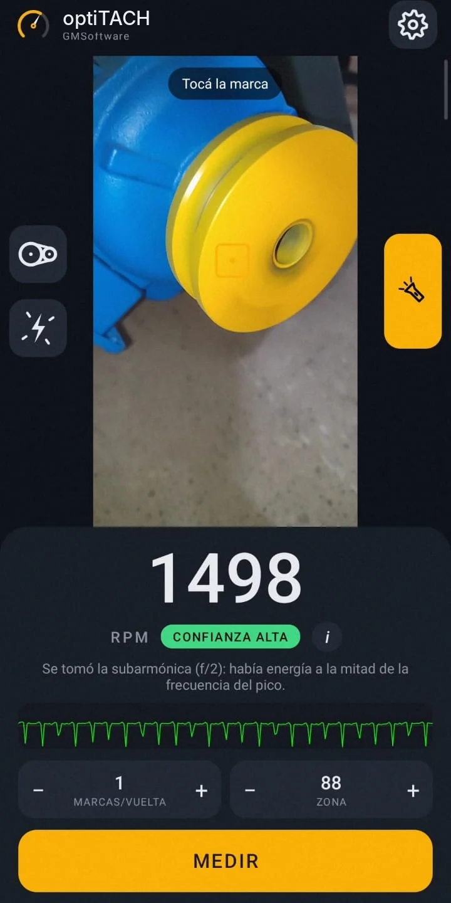
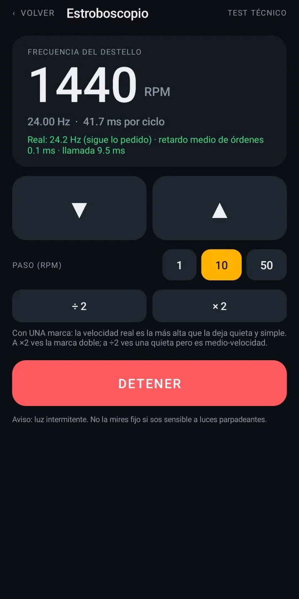
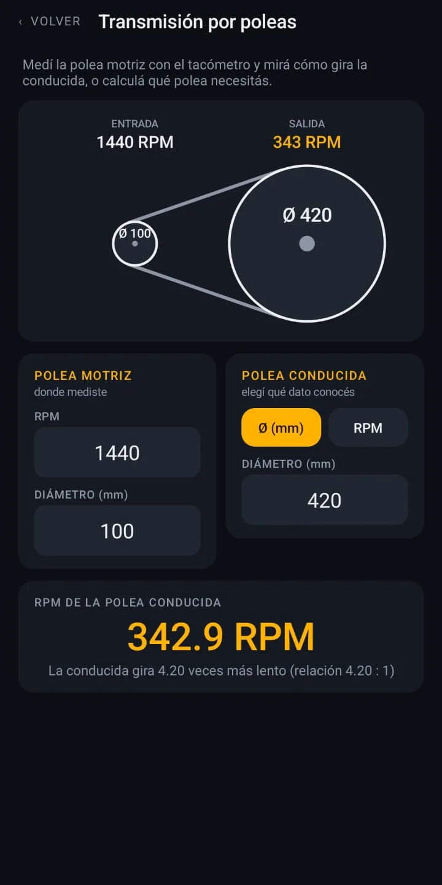

Tacómetro óptico
Usa la cámara en alta velocidad (240 o 120 fps) y calcula las RPM con análisis de frecuencia. Te avisa si la lectura está fuera del rango de tu cámara.
Apuntás la cámara a una marca en el eje o el disco, tocás MEDIR y listo. Sin sensores, sin cables, sin estroboscopio.

Una polea girando, una marca y unos segundos de cámara. Después, la lectura se compara con un tacómetro de mano.
Usa la cámara en alta velocidad (240 o 120 fps) y calcula las RPM con análisis de frecuencia. Te avisa si la lectura está fuera del rango de tu cámara.

Usa el LED del teléfono para "congelar" el movimiento y verificar velocidades.

Calculadora de poleas y engranajes: velocidad de salida y relaciones.
Sin internet. Funciona sin conexión. La medición se hace toda en el teléfono.
Necesita un teléfono con cámara de alta velocidad (240 o 120 fps a 720p). Si el tuyo no la tiene, la app te lo dice al abrirla.
60 Bs≈ 5 USD. Pago único, para tu teléfono.
En pruebas contra un tacómetro de taller y un generador de referencia, la diferencia estuvo alrededor de 1 % dentro del rango de la cámara. El límite depende de tu teléfono: la app te muestra hasta cuántas RPM mide con seguridad.
Depende de la cámara. Con una marca por vuelta, un teléfono de 240 fps llega a unas 5700 RPM. Con más marcas por vuelta se baja el límite de RPM pero mejora la resolución.
No, es para el teléfono cuyo código nos mandaste. Si cambiás de teléfono, escribinos.
La app no pide más permiso que la cámara (y vibración para avisarte) y funciona sin internet. Descargala solo desde esta página.